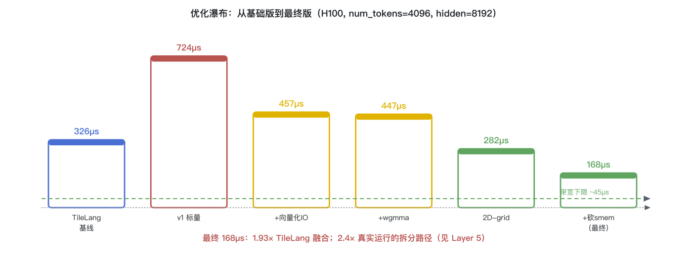
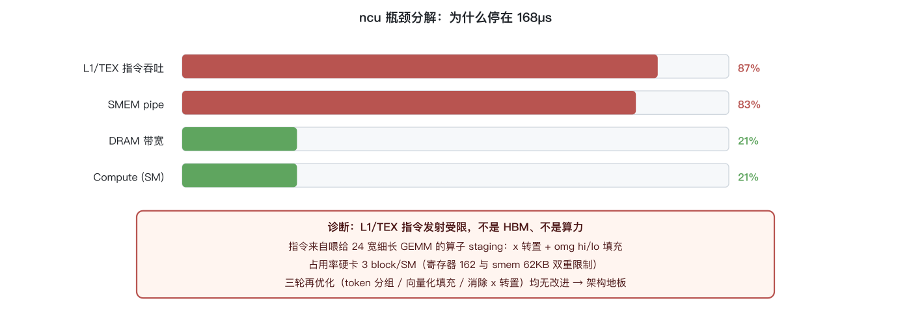
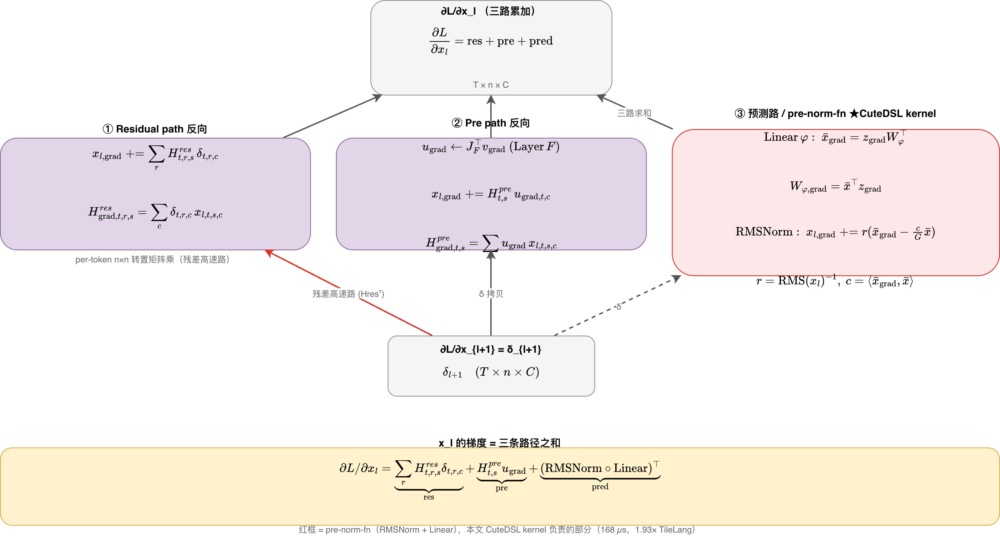

H100 (sm90) · num_tokens=4096, n_hc=4, hidden=2048 → mhc_hidden=8192 · 最终 168µs / 818 GB/s（1.93× TileLang）
一句话：pre-norm-fn = RMSNorm 后接一个 Linear。本文从 mHC 整体推出它的前后向，再从朴素实现逐步优化到超越 TileLang 的 Hopper bf16-wgmma 融合 kernel。
mHC（流形约束超连接）把残差扩成 n_hc=4 路，混合矩阵约束在 Birkhoff 双随机流形（Sinkhorn 投影）。混合系数是动态的——由 RMSNorm(x) 经一个轻量线性层 φ 预测出 2n+n²=24 个 raw logits。pre-norm-fn 就是这一步。
$r=\Big(\tfrac1G\sum_j x_j^2+\varepsilon\Big)^{-1/2},\quad \bar x=x\cdot r,\quad \mathrm{mixes}=\bar x\,fn^{\top}\ (M=24)$
实现上 kernel 保存未归一化的 out_mul = x·fnᵀ 与 sqrsum = Σx²，则 mixes = out_mul·rms（代数等价）。
mHC 单层（论文 Eq.3）：
$x_{l+1}=H^{\mathrm{res}}_l x_l+(H^{\mathrm{post}}_l)^{\top}F(H^{\mathrm{pre}}_l x_l, W_l)$
(a) Linear 反向：
$\mathrm{fn\_grad}=g^{\top}\bar x\ (\text{GEMM1, 沿 token 归约}),\qquad \bar x_{\mathrm{grad}}=g\,fn$
(b) RMSNorm 反向（$c=\langle \bar x_{\mathrm{grad}},\bar x\rangle$）：
$x_{\mathrm{grad}}=r\Big(\bar x_{\mathrm{grad}}-\tfrac{c}{G}\,\bar x\Big)\ (+\ \text{初值}),\qquad \frac{\partial r}{\partial x_j}=-\frac{r^3}{G}x_j$
关键：∂r/∂x 只含一个 r 因子 → sqrsum_grad 含单个 rms（标准 RMSNorm 反向）。
⚠ 发现：仓库 ref 与两个 kernel 都用了 rms²（多一个 rms 因子）。autograd 核验：rms≠1 时 rms² 误差 0.15、rms¹ 误差 1e-16。residual≈单位方差(rms≈1)时被掩盖，故测试都过。

ncu：L1/TEX 指令吞吐 87%、DRAM/算力仅 21% → 指令受限；占用率被 reg(162)+smem(62KB) 双限在 3 block/SM。三轮再优化（token 分组/向量化填充/消除 x 转置）均无改进 → 架构地板。

nsys 实跑：生产当前走拆分路径 bwd_mul(398µs)+bwd_norm(4µs)≈402µs；融合 cute kernel 吃同样张量、drop-in 替换 → 2.4×。形状一致(4096/8192/1)。
启用：环境变量 TILE_KERNELS_MHC_BWD_BACKEND=cute（auto 在 n_rms_group=1 且 cutedsl 可用时自动启用，否则回退 TileLang）。
export TILE_KERNELS_MHC_BWD_BACKEND=cute
pytest tests/mhc/test_norm_fn_bwd_fused.py参考：Laurent Boué《Deep learning for pedestrians》系列（arXiv:1811.11987 / 2512.23329）；DeepSeek-V4 mHC。
✏️ 点此在 draw.io 中编辑此图 （编辑器里改完点 Save 💾，下方这张图几秒内自动替换为新版）

飞书撰写 · 自动发布 · Method A 管道